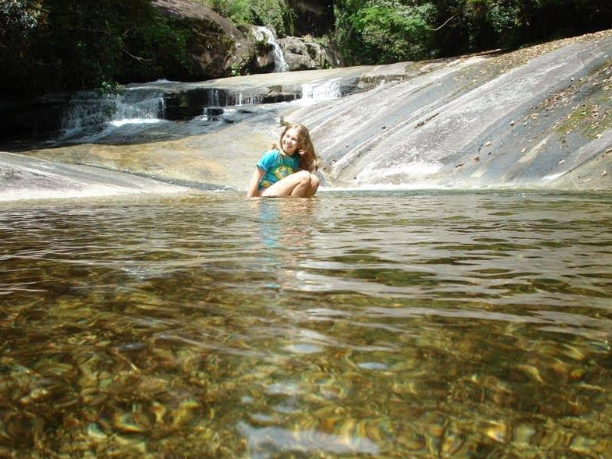
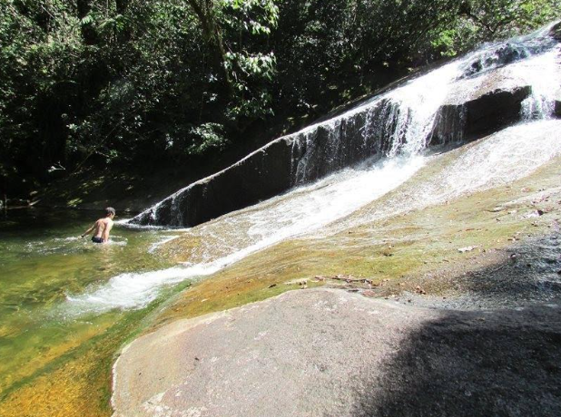
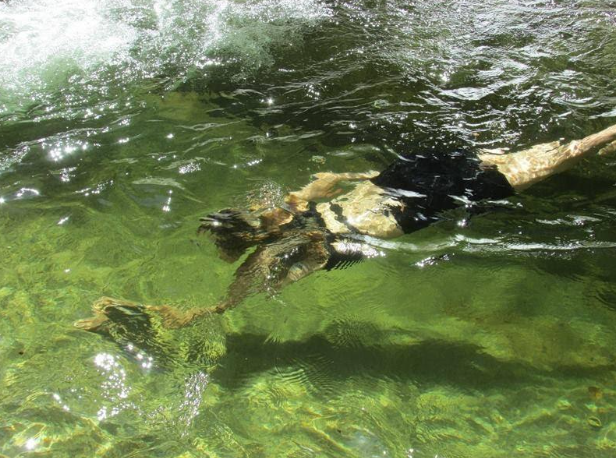
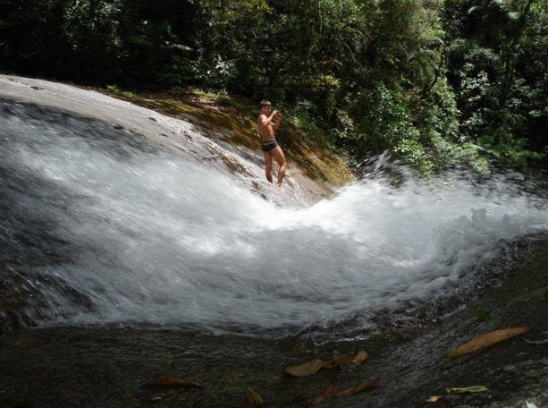

Detalhes do Roteiro
Início Sobre Nós Serviços Pacotes Atividades Contato Salto do Tigre Venha Conhecer O Salto do Tigre é uma encantadora cachoeira localizada na comunidade de Cambará, em Matinhos, Paraná, dentro do Parque Nacional de Saint-Hilaire/Lange. Esse pacote é uma excelente opção para quem busca contato com a natureza e momentos de lazer, além de curtir uma magnifica trilha em meio a mata atlântica. Serviços inclusos nesse pacote: Translado privativo saindo de Morretes Guias e condutores local credenciados Kit lanche de trilha Fotos e filmagens Seguro atividade O que esperar do local? Quedas d'Água: O Salto do Tigre é composto por uma sequência de três quedas no curso do rio Cachoeirinha. Ambiente Natural: A trilha é cercada por uma imensa variedade de plantas, flores e frutos típicos da Mata Atlântica, proporcionando uma experiência imersiva na natureza. Banho Refrescante: Na queda d’água mais baixa, é possível mergulhar e relaxar na ‘prainha' de areia e pedras. Informações Adicionais Equipamento Adequado: Use calçados fechados e confortáveis, como tênis de trilha, para garantir segurança durante o percurso.Infraestrutura: Não há infraestrutura turística no local. Recomenda-se levar água, lanches e protetor solar.Distância: A trilha possui aproximadamente 2.200 metros de extensão;Dificuldade: Leve, com poucos trechos de leve inclinação.
Tarifas
| Nº de pessoas | Guia bilíngue | Adulto | Criança |
|---|---|---|---|
| 2 a 14 | Não | R$ 290,00 | R$ 225,00 |
| 2 a 10 | Sim | R$ 320,00 | R$ 275,00 |
Galeria de Fotos



